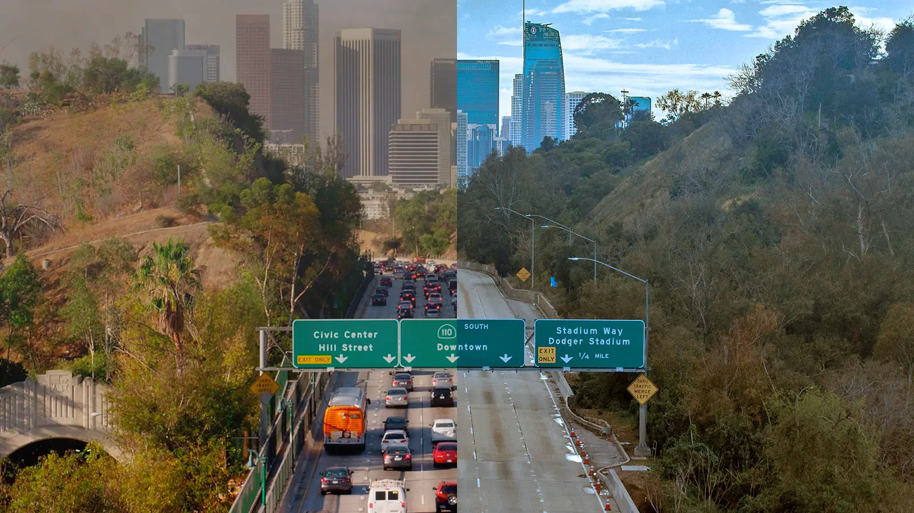

Rethinking California’s Transportation
Policy Landscape

Transportation Is California's Biggest Climate Problem
Transportation is the single largest source of climate pollution in California, responsible for roughly 38% of statewide greenhouse gas emissions in recent inventory years (CARB, 2023). Despite two decades of clean-vehicle mandates and fuel-efficiency standards, the sheer volume of driving continues to undermine progress toward the state's climate goals.
- 360 million metric tons CO₂e total statewide emissions (2023)
- Transportation alone: ~137 MMT, more than industry, electricity, and buildings combined

Driving Is Going in the Wrong Direction
Vehicle miles traveled (VMT) dropped sharply during the COVID-19 pandemic and rebounded above pre-pandemic levels by 2022. The statewide trend is heading the wrong way: VMT is now rising relative to 2005 baselines, while GHG reductions are stalling. Per-capita driving remains well above the trajectory needed for California's climate targets.
- Statewide VMT is now ~2% above the 2005 baseline (vs. targets requiring deep cuts)
- Sprawl-oriented development and continued highway expansion are key drivers

Pollution Falls Hardest on Disadvantaged Communities
The costs of all this driving are not shared equally. Census tracts identified as disadvantaged communities (DACs) by CalEnviroScreen 4.0 (the top 25% most burdened statewide) are disproportionately exposed to traffic-related NO₂, PM₂.₅, diesel particulate matter, and ozone. The health consequences follow: higher rates of asthma, cardiovascular disease, and premature death.
- DAC tracts face 2–3× higher pollution burdens than the statewide median
- The overlap between high-VMT corridors and DAC communities is stark and measurable

Freeways Were Built Through These Communities, Not For Them
Many of today's most-burdened communities sit along highways and freight corridors that were deliberately routed through low-income and minority neighborhoods in the mid-20th century. Historical redlining maps make the pattern unmistakable: freeways like SR-99 and the Pasadena Freeway were sited through census tracts that were 76–100% households of color, while less-impacted alternatives existed.
- This legacy shapes pollution exposure, housing value, and health outcomes today
- SB 375 set regional GHG targets; SB 1087 can give them real implementation teeth

This didn’t happen overnight. The roots of today’s pollution crisis go back nearly a century.
How We Got Here: The Historical Roots of Today's Pollution Burden
The communities that bear the heaviest traffic pollution today are largely the same communities that federal housing policy targeted a century ago. The pattern is not accidental.
Redlining Concentrates Risk
Federal housing maps graded Black and immigrant neighborhoods as "hazardous," denying residents loans and concentrating poverty. These same neighborhoods would later be targeted for freeway construction.
Source: Greenbelt Alliance / HOLC mapsFreeways Built Through Communities of Color
I-880, I-980, SR-99, and I-5 were routed through redlined neighborhoods, not despite who lived there, but because of it. Over 500 homes were demolished for the I-5 expansion alone in communities where 96% of households were already severely housing cost-burdened.
Source: Greenlining Institute, 2025Displacement Continues
850+ homes and businesses were demolished by highway expansion in just five years. More than 200 additional expansions remain in the pipeline.
Source: Greenlining Institute / Caltrans SB 695 dataThe Burden Persists
Communities near I-710, I-105, SR-99, and I-80 still rank in the top 25% of CalEnviroScreen pollution burden, a direct legacy of where freeways were built and for whom.
Source: CalEnviroScreen 4.0 (OEHHA)🏠 Segregation by Design: How Redlining Built Today's Pollution Crisis
California's transportation pollution crisis didn't happen by accident. The neighborhoods bearing the heaviest pollution burdens today are overwhelmingly the same neighborhoods that federal housing policy deliberately targeted for disinvestment in the 1930s, and that highway planners deliberately routed freeways through in the 1950s and 1970s. This is a story with a beginning, a middle, and a present that is still unfolding.
Then vs. Now: Redlining and Pollution Burden
With few exceptions, present-day pollution burden in Oakland and Los Angeles corresponds
directly to the 1937–39 HOLC redlining maps. The areas graded “Hazardous” are today
predominantly communities of color with the highest CalEnviroScreen scores.
This is not a coincidence.
Fill color shows CalEnviroScreen 4.0 Pollution Burden percentile (OEHHA) —
high pollution burden defined as ≥ 75th percentile statewide.
Sources: HOLC via Mapping Inequality
(Univ. of Richmond, 2023); CalEnviroScreen 4.0 (OEHHA).
Oakland narrative: Segregation by Design.
Destruction by the Numbers
How We Got Here
Federal Maps Designate Communities of Color as "Hazardous"
The Home Owners' Loan Corporation grades Oakland and LA neighborhoods A through D for mortgage eligibility. Grade D ("Hazardous") areas are overwhelmingly Black and immigrant. Residents in these areas are denied federally-backed home loans, unable to build the generational wealth the government was simultaneously providing to white families in Grade A neighborhoods.
Source: Mapping Inequality, Univ. of RichmondFreeways Are Routed Through the Same Neighborhoods
Highway planners build I-880, I-980, and I-580 directly through West Oakland's Black neighborhoods, the same areas the HOLC had redlined. The Cypress Freeway destroys 5,000 homes. I-980 creates a concrete wall between West Oakland and downtown. These were not random routing decisions: planners explicitly used freeways as barriers between differently graded areas.
Source: Segregation by Design
Urban Renewal Compounds the Damage
What the freeways didn't destroy, urban renewal projects finished. West Oakland's 7th Street corridor, once called the "Harlem of the West" with jazz clubs, Black-owned banks, and walkable transit-connected neighborhoods, is systematically dismantled. The Key System streetcar network, the spine of transit-oriented Black Oakland, is replaced with car infrastructure.
Source: Greenbelt AllianceHighway Expansion Continues in the Same Communities
Despite outlawing overt redlining in 1968, California's highway expansion program demolishes 850+ homes and businesses, with 90% of them concentrated in communities that still rank in the 90th to 99th percentile of CalEnviroScreen. The I-5 expansion alone demolishes 569 structures in a community where 96% of households are severely housing cost-burdened.
Source: Greenlining Institute, Homes Before Highways (2025)The Burden Is Still Concentrated in the Same Places
Oakland's formerly redlined flatlands have 4% tree canopy coverage compared to 50%+ in the hills. During heat waves, these neighborhoods run 12°F hotter. They have among the highest asthma rates in California. And 200+ more highway expansions are planned statewide, with no requirement to prove climate performance or community benefit. SB 1087 is a chance to change that.
Sources: Greenbelt Alliance; Greenlining Institute![West Oakland 7th Street before freeway construction, pre-1955 — streetcar, pedestrians, thriving Black commercial corridor known as the Harlem of the West]()

📖 Data & Methodology
Case Studies: The Human Cost of Highway Expansion
These are not hypothetical scenarios. Each project below was built, funded with public dollars, and completed in the last decade.
The surrounding community ranks in the 98th percentile of CalEnviroScreen pollution burden. 96% of households in the area were already severely housing cost-burdened before demolition began.
Community ranks in the 90th–99th percentile of CalEnviroScreen. 72% of households severely housing cost-burdened. The expansion increased heavy truck traffic in California's already highest-pollution region.
Traffic and commute times increased after the expansion. 96% of households severely housing cost-burdened. $2.16 billion spent, and congestion got worse.
These projects were funded under the current system. No law required them to prove climate performance. SB 375 was supposed to change that.
Plans Without Power
California had a good idea. But a map of good intentions doesn't guarantee where the money actually goes.
What SB 375 Was Supposed to Do
Signed in 2008, SB 375 required every major region to create a Sustainable Communities Strategy, a long-range blueprint connecting land use, transportation, and greenhouse gas reduction into one plan. The goal was to steer housing and growth toward places where people wouldn't need to drive as much, and to pair that growth with transit investments that move people efficiently.
On paper, those strategies look good. Many include ambitious targets for reducing vehicle miles traveled and emissions. The problem is that meeting the targets is optional in practice, because funding decisions happen through a separate, largely disconnected pipeline.
The Implementation Gap
SB 375 tells regions what to plan for, but it doesn't control where the money goes. A region can adopt a plan promising fewer car trips, then approve a ten-lane highway project funded with state and federal dollars that directly contradicts it. No one is legally required to reconcile the two.
Low-income neighborhoods and communities of color already carry a disproportionate share of traffic-related air pollution. The investments that could help them most, including transit access, safe sidewalks, and clean-air corridors, remain chronically underfunded. The equity map above shows where the concentration of VMT-driven pollution overlaps with the most overburdened communities.
Other states faced the same gap between plans and spending. Here’s how they closed it.
Four State Stories
Other states have grappled with the same disconnect between plans and spending. They've found ways to close it. Here is what they did and what California can take from each.
Putting a Climate Check on the Budget
Colorado's transportation planners faced a familiar frustration: projections showed greenhouse gas emissions rising, but the project pipeline kept feeding the problem. Congestion-relief arguments made it easy to justify highway expansions, even when those expansions would generate more driving in the long run.
To break that cycle, Colorado established a GHG budget lock for its transportation program. Under this approach, a project can only receive funding if it either keeps emissions flat or comes with meaningful offsets: new transit capacity, protected bike lanes, signals that reduce idling, or contributions to climate mitigation programs. If a road widening is going to put more miles on the road, it has to bring something to the table to balance that out.
The practical effect is a shift in the conversation at the project-selection table. Engineers and planners must answer a climate question before a project moves forward, not after. That built-in accountability changes which investments get prioritized over time.
Impact Snapshot
- VMT: Highway projects that would generate net new driving must include offsets: creating a natural brake on expansions that increase vehicle miles traveled.
- GHG: Emissions impacts are built into funding decisions; a project cannot ignore its climate footprint to advance in the pipeline.
- Health & Equity: By limiting unmitigated highway growth, communities near busy corridors are less likely to see pollution loads rise without corresponding benefit investments.
Pairing Highway Expansion with a 20-Year Reckoning
Minnesota zeroed in on the decision that matters most: the moment a state chooses to make a highway physically bigger. That is typically the point of no return, because new road capacity tends to generate new driving no matter what else surrounds it.
Minnesota's capacity trigger policy requires that when a project would add significant road capacity beyond a set threshold, it must undergo a formal 20-year greenhouse gas impact assessment before approval. That assessment has real teeth: if the analysis shows the project will meaningfully increase VMT and emissions, it must be redesigned, paired with genuine offsets, or canceled.
This forward-looking requirement forces decision-makers to reckon with the full trajectory of a project, not just its ribbon-cutting moment. It also creates an opening for communities to engage before money is committed and concrete is poured.
Impact Snapshot
- VMT: Capacity-triggering analyses directly connect new road space to induced driving , a link that traditional traffic studies routinely overlook.
- GHG: Projects with unacceptable emission projections can be redesigned or stopped; the assessment isn't informational only; it has decision-forcing power.
- Health & Equity: Communities near high-traffic corridors gain a documented, public record of projected pollution burdens before a project proceeds.
Scoring Projects So the Math Is Public
Virginia needed a way to change the fundamentals of how projects compete for money, and to do it transparently, so communities and advocates could see exactly why one project won and another lost.
The answer was SMART SCALE, a statewide scoring system that grades transportation projects across dimensions like congestion reduction, greenhouse gas performance, land use quality, and multimodal access before any dollars are committed. Projects that perform well on climate and equity metrics climb the list. Projects that primarily move more cars, without reducing system-level emissions, face a steeper climb.
Because scores are public, the process creates accountability. Local officials, community groups, and journalists can see how trade-offs were made. Land use and environmental quality are now routine parts of the conversation, not afterthoughts.
Impact Snapshot
- VMT: Scoring rewards projects that locate people near destinations. shorter trips, fewer miles, rather than those that simply expand road capacity.
- GHG: Environmental quality is an explicit scoring category, so climate-poor projects face a real competitive disadvantage.
- Health & Equity: Multimodal access scoring encourages investments in transit, walking, and biking that expand options for low-income households who depend on those modes.
Making Emission Targets Legally Binding
Massachusetts confronted the difference between an emissions goal and an emissions obligation. Goals are aspirational. Obligations have consequences.
Massachusetts established legally binding, annually declining CO₂ limits on its transportation sector. The state Department of Transportation must hit those limits, not aspire to them. If targets are missed, corrective action is required. The agency cannot update a presentation deck and move on; it must change how it allocates investments to close the gap.
The result is a shift in institutional culture: climate becomes a constraint agencies build their programs around, the same way budget limits already work, rather than a consideration added late in the project review cycle.
Impact Snapshot
- VMT: Agencies facing hard emission limits have strong incentives to favor projects that reduce driving over those that add capacity.
- GHG: Annual, legally enforceable declining caps ensure that progress is real and measurable, not just projected in a plan.
- Health & Equity: Corrective action requirements create recurring opportunities to direct investments toward communities bearing the heaviest pollution burdens.
Key Takeaways
The visuals and stories below all point to the same conclusion: when investment rules have teeth, spending shifts. And so do emissions, driving rates, and health outcomes.
Plans ≠ Investments
SB 375 requires good plans. It doesn't require good spending. The gap between the two is where climate progress gets lost.
Policy Tools Reduce VMT
Budget locks, capacity triggers, and scoring systems all tend to shift money away from projects that generate new driving, which reduces vehicle miles traveled over time.
Hard Limits Work
Legally binding emission caps, like the ones Massachusetts established, change how agencies prioritize projects internally, not just what they promise in reports.
Equity Is Central
Communities near highways bear the highest pollution burdens. Redirecting funds toward transit, walking, and infill housing delivers the greatest health gains in those places.
The mechanisms exist. The legislative window is open. Here’s what it looks like in California law.
What This Could Mean for California
SB 375 gave California a map. SB 1087 is a chance to give that map a budget and real consequences for ignoring it.
All four states share a common thread: they moved beyond requiring good plans to requiring good investments. California's SB 1087 targets specific places in state law where similar guardrails could be inserted to close the implementation gap.
Translating these ideas to California doesn't mean copying another state's rulebook. California has its own regional structure, funding streams, and a far more diverse population of communities with varying needs. But the underlying mechanisms are portable. Here's what each approach could look like on the ground:
Require that any project receiving state transportation funds either avoids net new greenhouse gas emissions or pairs with mitigation: transit improvements, bike infrastructure, or demand management that demonstrably offsets the added impact.
↗ VMT Chart ↗ GHG ChartFor highway projects that add capacity above a defined threshold, mandate a 20-year VMT and emissions impact analysis with decision-forcing outcomes: redesign, offset, or cancel. Prevents large-scale expansions from advancing without reckoning with induced demand.
↗ VMT Chart ↗ GHG ChartRequire that state and regional funding programs use a transparent scoring rubric giving meaningful weight to GHG reduction, multimodal access, and benefits to disadvantaged communities. Published scores make trade-offs visible and accountable.
↗ GHG Chart ↗ Equity MapEstablish annually declining CO₂ limits for California's transportation sector with statutory corrective action requirements when targets are missed. Transform climate commitments from aspirations to obligations agencies plan around every year.
↗ GHG ChartTogether, these tools would shift the center of gravity in California's transportation program. Reformed investments track consistently lower on emissions over time, and the gap widens as the project mix changes. The gains land where they matter most: in communities closest to the problem and furthest from the investment.
Policy Performance at a Glance
The charts below are computed from documented parameters: Caltrans VMT growth rates, EMFAC2021 CO₂ fleet-average factors, NCST induced-travel elasticities, and CalEnviroScreen-calibrated corridor burden scores. Values are illustrative scenario projections, not certified forecasts, and will be updated as corridor analyses mature.
Potential VMT Reductions by Policy Approach
Each tool changes the incentive structure so that fewer lane-miles get built, more transit gets funded, and total driving slows compared to trend.
Conceptual / illustrative data only. Values represent plausible scenario ranges, not modeled forecasts.
Potential GHG Emissions Reductions Over Time
Shifting transportation spending away from highway capacity expansions and toward transit, walking, biking, and infill housing takes time to register in emissions data, but the trajectory compounds. This chart shows a conceptual 20-year comparison: California's current emissions path under existing SB 375 planning rules versus scenarios where SB 1087 guardrails are in place. Reformed scenarios track lower over time, with steeper reductions as transit ridership builds, induced demand from new highway lanes is avoided, and more housing locates near jobs and services. The Massachusetts-style annual cap provides a reference for what staying "on track" would look like.
Conceptual / illustrative data only. Trajectories represent plausible scenario directions, not modeled forecasts.
What the Evidence Shows
A growing body of California-focused research quantifies how different policy levers affect driving levels. Land-use strategies that place housing near transit and jobs (compact development / TOD) consistently show 5–15% VMT reductions per household (Handy & Boarnet 2016; CARB SB 375 guidance). Pricing and TDM programs, such as congestion charges and employer commute incentives, yield 3–12% reductions (PPIC Driving Change, 2021). Meanwhile, the NCST Induced Travel Calculator documents that highway capacity expansions routinely generate 5–15% more driving on affected corridors within a few years (Caltrans/NCST, 2022). The chart below summarizes these literature-informed ranges.
Ranges are drawn from peer-reviewed and agency studies; they represent typical effect sizes, not project-specific forecasts. Sources: Handy/Boarnet 2016, PPIC 2021, Caltrans/NCST 2022, CARB SB 743 guidance.
Electrification alone will not get California to its climate targets. Vehicle technology (EVs and fuel standards) can deliver roughly 25–40% GHG reductions from current levels by 2045 (CARB Scoping Plan 2022). Adding a modest VMT reduction (~5%) pushes that to about 35–50%. An ambitious package combining technology with ~15% VMT cuts reaches 50–65%, far closer to California's carbon-neutrality targets. SB 1087 is designed to unlock that combined potential.
Illustrative ranges informed by CARB Scoping Plan 2022, PPIC, and NCST research. Not project-specific model outputs.
Health and Equity Impacts in Overburdened Communities
Disadvantaged communities, particularly those near major highways and freight corridors, face higher rates of traffic-related air pollution and the health consequences that follow: elevated asthma, cardiovascular disease, and premature death. The map and chart below compare estimated current pollution exposure with potential outcomes under SB 1087-style investment shifts across key California corridors.
hotspot tracts statewide
DAC vs non-DAC tracts
(tons CO₂ per person/yr)
Fill color shows a VMT index: each tract’s per-capita driving relative to the
statewide average (100 = California average).
Dashed outlines mark Disadvantaged Community (DAC) tracts as defined in
CalEnviroScreen 4.0 (overall CES score ≥ 75th percentile).
Thick outlines mark tracts that are both
high-VMT and high-pollution (top 25% for both VMT index and
CalEnviroScreen Pollution Burden percentile) —
these 309 hotspot tracts are where the case for SB 1087 reform is most urgent.
High pollution burden defined as CalEnviroScreen 4.0 Pollution Burden score
≥ 75th percentile statewide (OEHHA definition of Disadvantaged Community threshold).
Data sources: CalEnviroScreen 4.0 (OEHHA) + tract-level per-capita VMT derived from
regional estimates and Caltrans/Tracking California traffic data.
Conceptual / illustrative data only. Exposure index is relative, not derived from measured monitoring data.
Now it’s your turn. Adjust the levers and see what combination of policies it would take to hit California’s 2045 targets.
🎛️ Policy Lever Simulator: Design Your Own Reform Package
Use the sliders below to explore how different transportation and land use policies could affect how much Californians drive and how much carbon pollution results. Pull the levers, mix and match, and see what it would take to hit California's 2045 climate targets.
🟢 VMT-REDUCING POLICIES
🔴 CAPACITY & MODE SHIFT
Where Your Policy Mix Takes California
Estimated Emissions Avoided vs. Business as Usual
Methodology & Assumptions (for researchers and planners)
Policy Lever Effect Sizes
Modeling Assumptions
- Effects are modeled as linear and additive for illustrative purposes. In reality, policy interactions are nonlinear — combining transit with TOD yields compounding benefits, while highway expansion can partially offset other gains.
- Induced demand from highway expansion is modeled using a VMT elasticity of ~1.0 (Duranton & Turner 2011): a 10% capacity increase → ~10% more driving within a few years.
- Phase-in: All effects phase in linearly over 20 years (2025–2045), reflecting implementation lag.
- GHG conversion: CARB EMFAC2021 fleet-average factor of 0.338 kg CO₂e/VMT. This factor will decline as EVs penetrate the fleet; this tool does not model fleet turnover.
- Population held constant at 39 million.
Disclaimer: This tool is designed for policy communication and education. Effect sizes are drawn from peer-reviewed literature but do not constitute a certified traffic or emissions model. For official data, see CARB's SB 375 Dashboard.
Questions Worth Asking
Real change happens when the right people ask the right questions at the right moment. Here is where to start, wherever you sit in this conversation.
For Community Members & Advocates
- Are our transportation investments required to reduce driving and pollution, or just to move more cars?
- Which highway projects near our community are in the pipeline, and have they gone through a climate and health impact review?
- Does our regional plan have enforceable funding guardrails, or just aspirational targets?
- What percentage of regional transportation spending goes to transit, walking, and biking in our community compared to road expansion?
- Are communities near major corridors being considered as priority areas for clean air investment?
For Local & Regional Decision-Makers
- Does our current project scoring system put real weight on VMT reduction and GHG performance — or do those factors get overridden in practice?
- Are we required to show that our transportation investments align with our Sustainable Communities Strategy, or is that alignment optional?
- How would our project pipeline change if we had to meet an annually declining emissions budget?
- Which projects in our pipeline would survive a rigorous climate and equity scoring review, and which wouldn't?
- Are we measuring and publishing the actual outcomes of completed projects: VMT generated, emissions impact, changes in air quality near corridors?
For State Policymakers
- What specific language in SB 1087 would create enforceable investment guardrails, not just planning requirements?
- Should California adopt a GHG budget lock for its state transportation program, similar to Colorado's?
- What threshold should trigger a mandatory 20-year VMT impact assessment for highway capacity projects?
- How would a statewide climate-and-equity scoring system interact with existing regional funding frameworks — and who sets the weights?
- What corrective mechanisms would be triggered when transportation agencies miss their emission reduction targets?